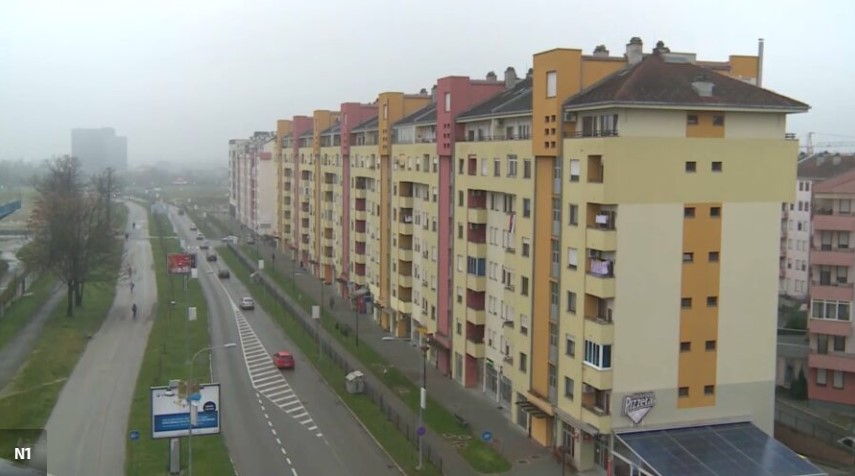

Kako navode iz Agencije za statistiku Bosne i Hercegovine, u poređenju s prosječnom cijenom prodanih novih stanova po kvadratnom metru, u prošloj godini prosječna cijena bila je viša za deset posto, dok je u odnosu na drugo tromjesečje prošle godine bila veća za 9,5 posto. Ovaj rast cijena, smatraju stručnjaci, vrlo je vjerovatno utjecao na pad potražnje, odnosno prodaje novih stanova.
Garaža površine 38 kvadratnih metara u zgradi staroj tri godine u centru Zagreba prodana je za 150 tisuća eura, javlja RTL Televizija. Vlasnik agencije za nekretnine Filip Brkan rekao je RTL-u da se za taj novac u Zaprešiću može kupiti dvosoban stan u novogradnji.
Cijene kvadrata stana u Beogradu skoro su duplo više nego u Sarajevu i Skoplju, gdje nema drastičnijeg rasta cijena nekretnina. U Hrvatskoj i dalje vrtogavo rastu cijene stambenog prostora Prema podacima Hrvatskog državnog zavoda za statistiku, za poslednjih godinu dana cijene nekretnina su skočile čak 10,4 odsto. Ipak, najskuplji kvadrati u Hrvatskoj nisu samo u Zagrebu, već i na primorju – u Dubrovniku, Splitu i Zadru. I dok su i u Beogradu i u Zagrebu najtraženiji stanovi, u Splitu i Dubrovniku su skuplji kvadratni metri kuće nego stana.
Prema službenoj statistici, prosječna cijena kvadrata stana u BiH u drugom tromjesečju iznosila je 2.851 KM, što je povećanje od 10% u odnosu na prošlu godinu.
Prema riječima stručnjaka, rast cijena stanova usporio je potražnju za novogradnjom u bh. gradovima.
Garaže u Zagrebu postižu rekordne cijene, a potražnja za parkirnim mjestima je visoka, s cijenama od 35 do 40 tisuća eura.
U Banjoj Luci cijene stanova nisu pale, ali potražnja se smanjila, naročito u novogradnji.
Najam stana u Sarajevu može koštati i do 3.000 KM, a cijene najma su u porastu u cijeloj zemlji.
U starijoj gradnji mogu se pronaći povoljniji stanovi, ali većinom dalje od centra.
U Banjoj Luci cijene stanova u starijoj gradnji mogu biti individualne, zavise od potražnje i lokacije.
Najam stanova u novogradnji u Banjoj Luci može biti znatno skuplji u odnosu na starije stanove.
Stanovi se prodaju, ali ne brzinom i intenzitetom kao što je to ranije bilo. Goran Račić, predsjednik Područne privredne komore Banje Luke, kazao je za Nezavisne novine kako je primjetno da je došlo do manje potražnje za stanovima u Republici Srpskoj. U naseljima koja su udaljena od centra 3,5 do 4,5 kilometra, poput Ade i Lazareva, stanovi u izgradnji se prodaju najmanje od 3.000 KM po kvadratu. U naselju Paprikovac, na lokaciji koja je udaljena oko 2-2,5 kilometara od centra, u izgradnji se stanovi prodaju za oko 3.300 KM.
Najskuplji stan trenutno je u samom centru, u ogromnoj stambenoj zgradi koju je investitor nazvao “Bijeli dvor” i nalazi se neposredno uz poznati objekat ustanove kulture Banski dvor.Na tržištu se mogu naći i useljivi noviji stanovi. Cijena jednog takvog od 47 kvadratnih metara, kompletno namještenog stana, koji se nalazi u zgradi izgrađenoj prije dvije-tri godine, u tzv. naselju Park, kod Parka „Mladen Stojanović“ košta 246.750 KM. Dakle, kvadrat košta 5.250 KM. Po posljednjim podacima Zavoda za statistiku RS, u drugom tromjesječju ove godine, u Banjaluci su prodata 233 stana po prosječnoj cijeni od 3.695 KM po kvadratu.